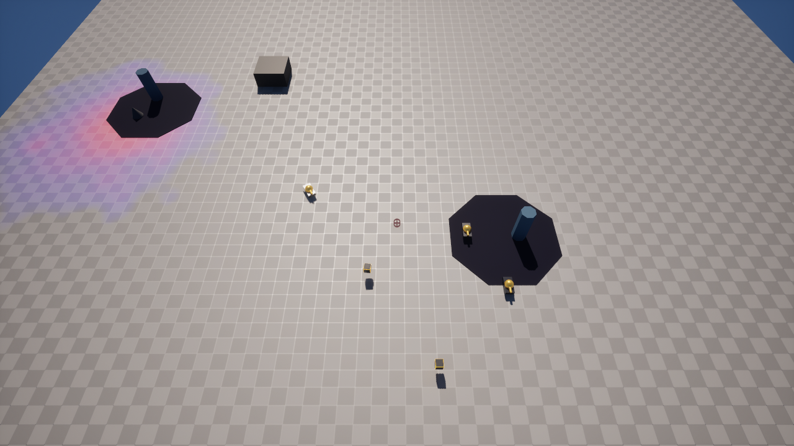

From Daggerfall to Dune 2: Why I Scrapped My RPG to Build an RTS
Hey everyone, checking in after quite some time.
I’ve made the decision to drop the "Intro to Unreal Engine" course by Rebelway. While I'll keep some of my reasons to myself, a major factor was simply a lack of time. Beyond that, I found some of the material to be a bit outdated - many of the workflows they covered can easily be found on YouTube, often explained even better. I completely respect that the Rebelway team are absolute masters when it comes to Houdini; however, based on this experience, I’m not really inclined to find out if their other courses would be a better fit. Being a solo game developer is already a pretty extreme undertaking in the indie scene, and time is by far my most precious commodity.
The next big news is a pivot away from my originally planned RPG genre. As someone who grew up on Daggerfall and similar classics, I would absolutely love to create a game like that, but realistically, I just don't have the resources. Over time, my vision had crystallized into something more narrative-driven, but writing extensive dialogues and building deep lore from scratch is a luxury I can't afford right now. Who knows, maybe I'll return to the RPG genre someday.
Thinking it over further, I kept going back to my childhood and the game that captivated me more than anything else: the absolute masterpiece that is Dune 2. I have immense respect for the people who created that gem, and I want to pay homage to them by attempting something in a similar vein.
For the past few months, I've been battling it out in C++. Thanks to Tom Looman's course, I can safely say I now have a fully functional core for a true RTS game. There's still a massive amount of development ahead of me, which is why I've set my target for a playable Vertical Slice for around the summer of 2028. Moving forward, I definitely hope to share my progress with you all here on the website at more regular intervals.

← Back to Devlog Index